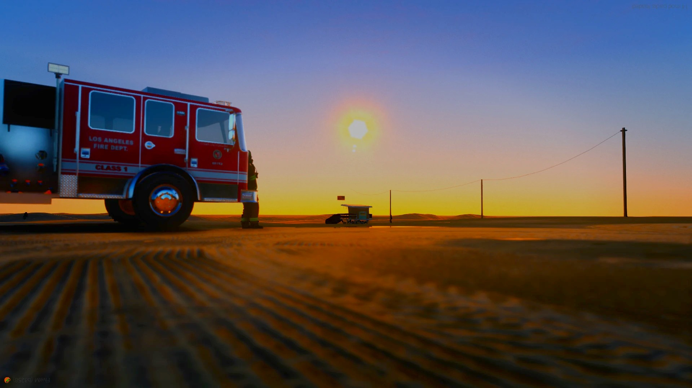
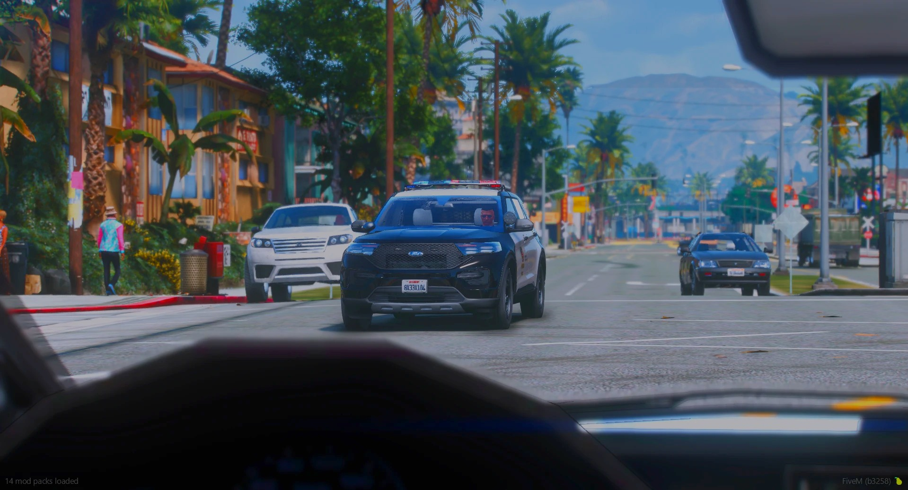
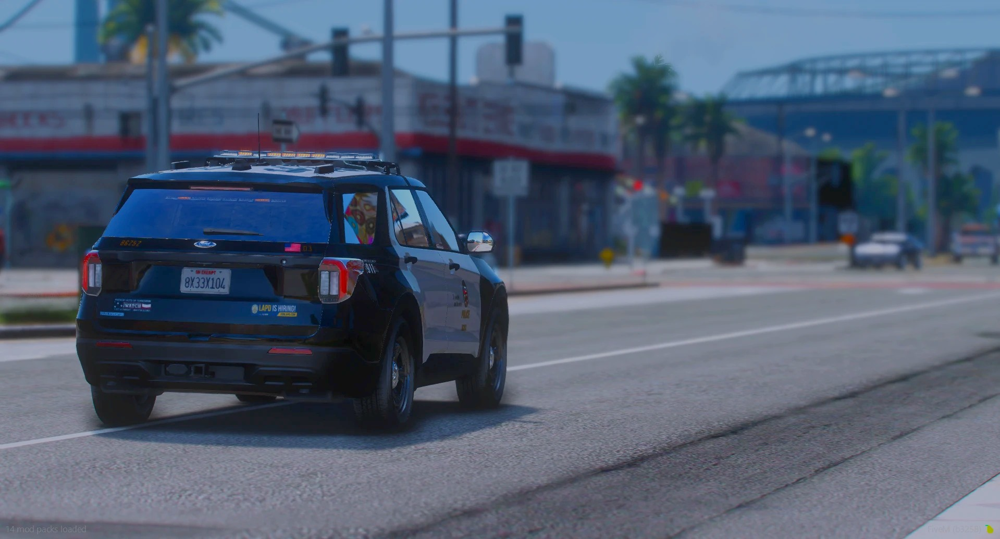
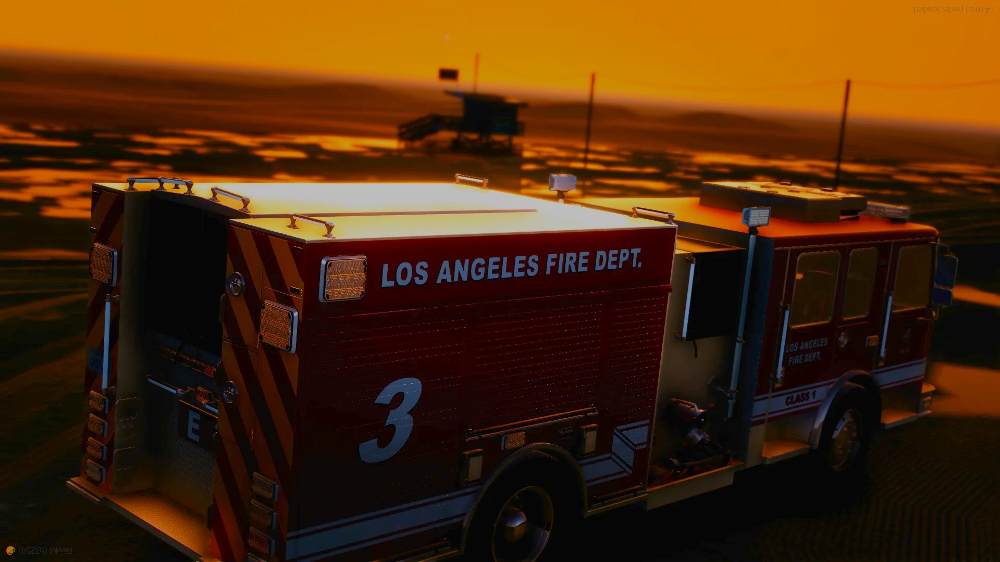
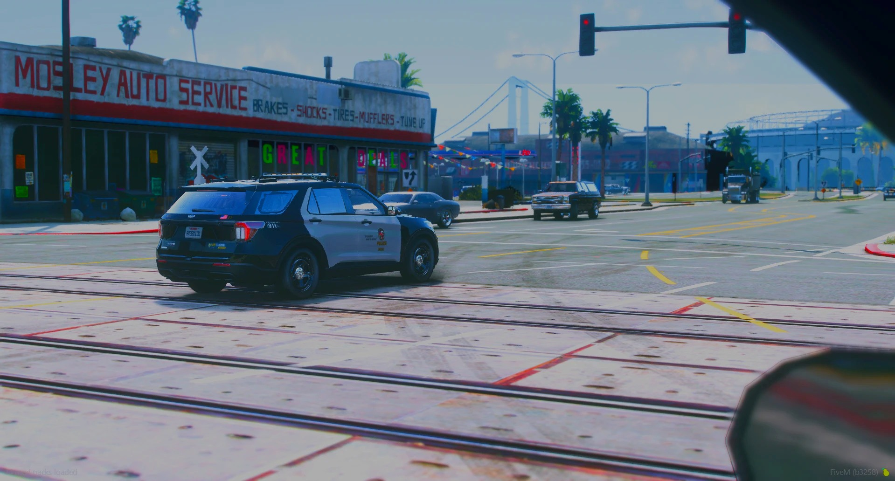
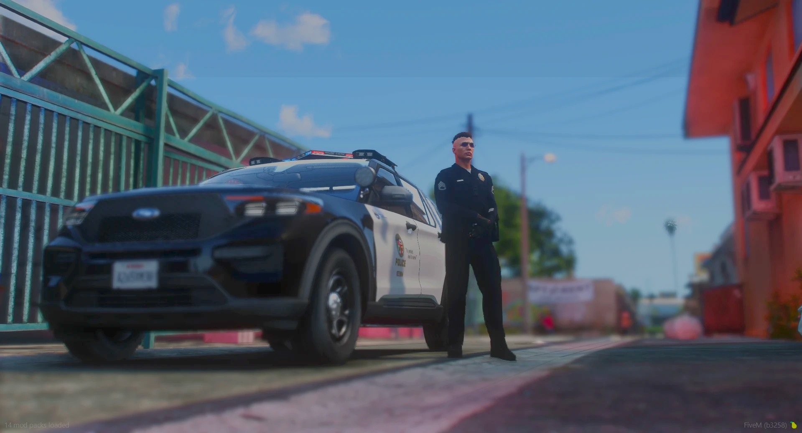
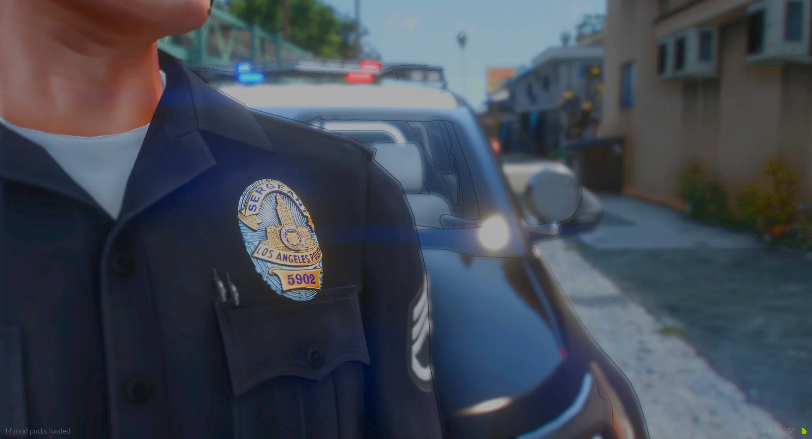

Los Angeles.Deine Geschichte.
Deutschsprachiges FiveM-Roleplay. Glaubwürdige Charaktere. Entscheidungen, die eure gemeinsame Geschichte verändern.
Die Szene zählt.
Ein Gespräch am Straßenrand. Eine Entscheidung im Einsatz. Eine Begegnung, die bleibt. Bei SCRP entsteht die Geschichte aus dem Zusammenspiel – nicht daraus, jede Situation zu gewinnen.
Dein Charakter braucht eine glaubwürdige Persönlichkeit. Lass anderen Zeit zu reagieren, spiele Verletzungen aus und nimm die Folgen deiner Entscheidungen ernst.
Charakter und Roleplay
Spannung mit Hintergrund
Konflikte brauchen einen nachvollziehbaren RP-Grund. Ein Gespräch, eine Eskalation und die Reaktion deines Gegenübers gehören zur Szene. Schnelle Gewalt ersetzt keine Geschichte.
Konflikte und KampfFair auf beiden Seiten
Trenne Spielerwissen von Charakterwissen. Erzwinge keine Ergebnisse für andere und behalte den Wert deines eigenen Lebens im Blick. Respekt gilt im Spiel und außerhalb.
Meta und KommunikationTeil dieser Stadt
LAPD, LAFD und UCLA sind die staatlichen Fraktionen unseres Servers. Ob Begegnung im Alltag oder angespannte Einsatzlage: Die gemeinsame Szene steht im Mittelpunkt.
Interesse an einer Fraktion?
Fragen zu den Fraktionen und deinem Einstieg klärst du direkt im Discord. Dort erreichst du das Team, ohne zwischen Bewerbungsformularen und verschiedenen Kontaktwegen suchen zu müssen.
Fragen im Discord klären
Von der Verkehrskontrolle bis zur Verfolgung: Gib deinem Gegenüber Raum für glaubwürdiges Polizei-RP.
Regeln zu Polizeikontakten
Verletzungen gehören zur Geschichte. Bleib in der Szene und lasse Behandlung und Rettung ausspielen.
Medizinisches RoleplayUCLA
UCLA gehört neben LAPD und LAFD zu den staatlichen Fraktionen bei SCRP.
Was du über die Fraktion wissen möchtest, klärst du im Community-Discord. Für alle drei gelten dieselben Grundsätze: nachvollziehbares RP und Respekt vor der Szene.
Mehr im Discord erfahrenDie Situation entscheidet
Fahrzeuge von LAPD, LAFD und UCLA dürfen nur gestohlen werden, wenn eine konkrete, nachvollziehbare RP-Situation den Diebstahl rechtfertigt. Willkürlicher Diebstahl oder reine Spaßfahrten sind nicht erlaubt.
Die vollständige FahrzeugregelFahrzeug ist nicht Ausrüstung
Die Ausnahme für Fraktionsfahrzeuge ist kein Freibrief für Ausrüstung. Das gesonderte Verbot für Diebstahl und Weitergabe staatlicher Ausrüstung und Gegenstände bleibt bestehen.
Eigentum und KriminalregelnLerne uns kennen.
Im Discord findest du die Community und deinen direkten Kontakt zum Team. Dort klärst du Fragen zu deinem Einstieg, den Fraktionen und allem, was vor deiner ersten Szene noch unklar ist.
- Community und Team erreichen
- Offene Fragen vor dem Spielen klären
- Bei Problemen ein Support-Ticket nutzen

Lies die Regeln.
Das Regelwerk ist dein gemeinsamer Rahmen mit allen anderen. Suche nach einem Begriff oder springe direkt zum passenden Kapitel, statt Regeln während einer laufenden Szene erraten zu müssen.
- Charakterwissen und Spielerwissen trennen
- Konflikte nachvollziehbar aufbauen
- Verletzungen und Konsequenzen ausspielen

Deine erste Szene
Überlege dir, wer dein Charakter ist, was ihn antreibt und wie er auf andere reagiert. Eine alltägliche Begegnung reicht als Anfang. Nicht jede Geschichte muss mit einer Verfolgung oder einem Konflikt starten.
- Eine glaubwürdige Persönlichkeit entwickeln
- Anderen Zeit für ihre Reaktion lassen
- Eine Szene nicht um jeden Preis gewinnen wollen
Ein Blick nach LA
Zwischen Palmenstraßen, Streifenwagen und Abendlicht: Diese Spielaufnahmen zeigen die Welt von SCRP. Wische durch die Galerie oder öffne ein Bild, um dir die Szene genauer anzusehen.


Seitlich scrollen, um mehr zu sehen. Ein Bild öffnet die Großansicht.
Gut zu wissen
Die wichtigsten Antworten vor deiner ersten Szene. Für verbindliche Spielregeln zählt immer das vollständige Regelwerk.
Wenn du Hilfe brauchst
Bei einer unklaren Regel fragst du vor deiner Handlung nach. Für Support und deine Sicht auf einen Vorfall nutzt du ein Ticket im Discord.
- Beschreibe die Situation nachvollziehbar.
- Bleib sachlich und respektvoll.
- Trenne die Klärung außerhalb des Spiels von der laufenden RP-Geschichte.
Was ist SCRP?
Southern California Roleplay ist eine deutschsprachige FiveM-Community mit Los Angeles als Spielwelt. Im Mittelpunkt steht glaubwürdiges, gemeinsames Roleplay.
Wo stelle ich Fragen?
Im Discord erreichst du die Community und das Team. Für Support nutzt du ein Ticket. Ein Kontaktformular gibt es hier nicht.
Welche Fraktionen gibt es?
Als staatliche Fraktionen gibt es LAPD, LAFD und UCLA. Informationen dazu erhältst du im Discord.
Wie trete ich dem Server bei?
Den direkten Verbindungslink findest du hier, sobald die Serveradresse hinterlegt ist. Bis dahin hilft dir das Team im Discord weiter.
Was gilt bei Regelverstößen?
Es gilt das Null-Verwarnungs-Prinzip: Ein Regelverstoß führt zunächst zu einem Bann. Über ein Support-Ticket kannst du deine Sicht schildern, bevor abschließend über die Strafe entschieden wird.
Ist das eine offizielle Behördenseite?
Nein. SCRP ist ein unabhängiges Roleplay-Projekt. Fraktionen, Fahrzeuge und Spielszenen sind Teil einer virtuellen Spielwelt, keine Angebote realer Behörden.

Dein Weg nach LA
Du kennst die Grundsätze, hast eine Idee für deinen Charakter und möchtest mitspielen? Der Discord ist dein direkter Weg zur Community.
Vorher noch ins RegelwerkKläre offene Fragen zum Einstieg, informiere dich über die Fraktionen und lerne die Menschen kennen, mit denen deine nächste Geschichte entsteht.
Der direkte Serverlink ist noch nicht hinterlegt. Die Verbindung ist deshalb hier noch nicht verfügbar.